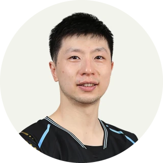

THE PRACTICE CLUB / 01

马龙 ●00自由开场VS11 分制
 樊振东 ●00
樊振东 ●00触控点
AI 球友 · 入门
RALLY0
正手攻球
上旋
YOUR NEXT GOOD RALLY STARTS HERE
好球，就在下一拍。
球在拍前等你。向前一挥，即可发球。
触屏拖动 · 鼠标同样适用轮到你发球斜挥选左右 · 轻推短，快挥长
↑
按住下半屏，向前挥拍球场暂时无法显示
请用支持 WebGL 的 Chrome、Safari 或 Edge 打开，并开启硬件加速。
球台已就绪，等你上场拖动移动 · 斜挥选左右 · 轻短快长找到你的节奏